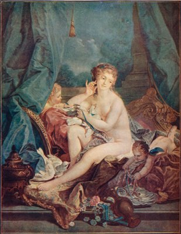
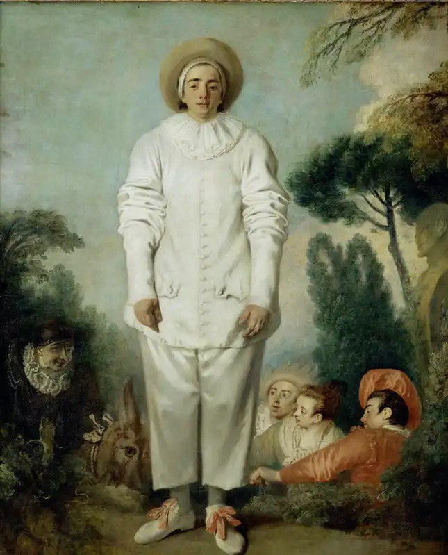
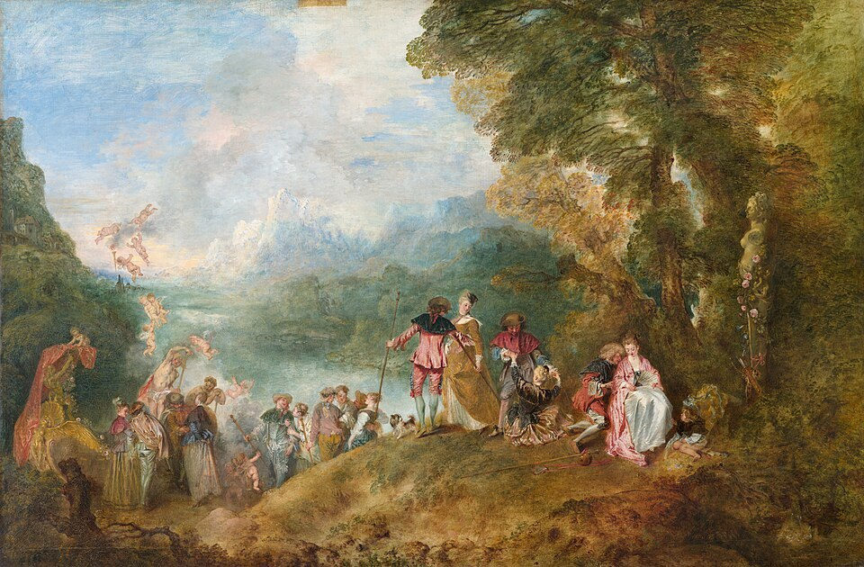
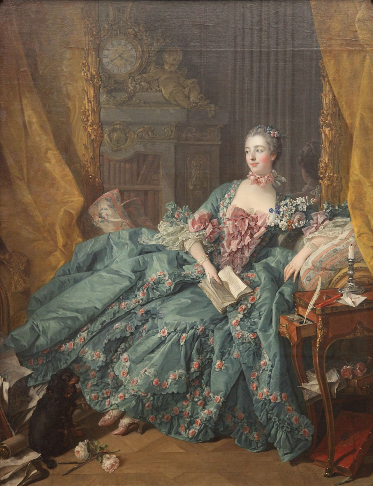
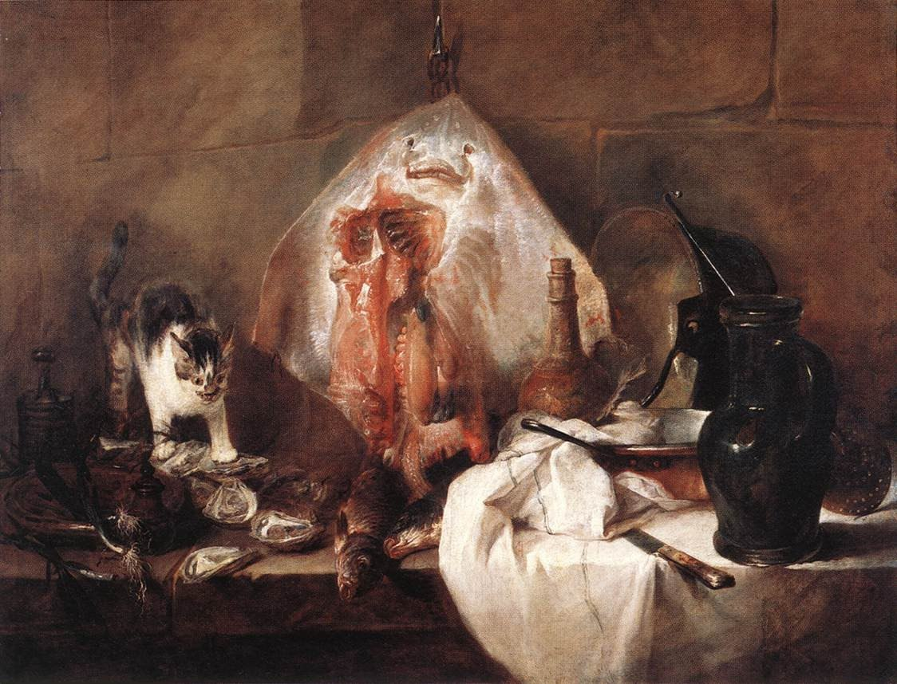
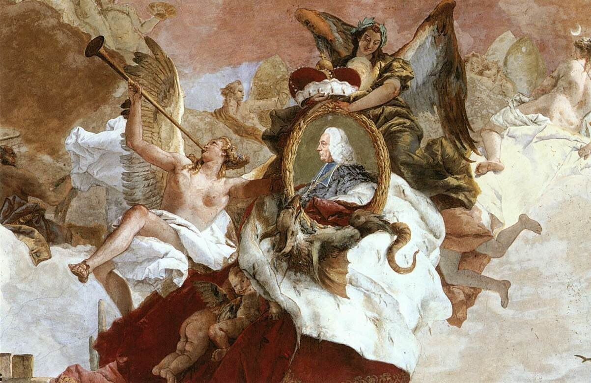
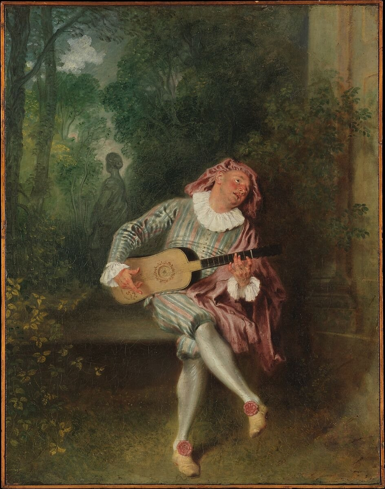

Meesterwerk: De Schommel
Jean-Honoré Fragonard, 1767

⚜️ UITGEBREIDE STIJLFIGUREN
🌸 ASYMMETRIE & SPEELSHEID
Slingerende lijnen: De "rocaille" (schelpmotief) - organisch, onregelmatig, asymmetrisch.
Lichtvoetig: Geen zware Barokke dramatiek maar gratie, elegantie, frivoliteit.
🔗 Tijdsgeest Connecties
Filosofie: Anti-classicistisch - weigeren van symmetrie, orde, rede
Politiek: De aristocratie ontvlucht de realiteit in speelse fantasie
Architectuur: Petit Trianon (1762-1768) - intiemer dan Versailles
🎨 PASTEL & LICHT
Kleuren: Roze, lichtblauw, crème, goud - vrouwelijk, luchtig, zoet.
Licht: Zacht, diffuus, intiem. Geen dramatische chiaroscuro.
🔗 Tijdsgeest Connecties
Politiek: Madame de Pompadour (maîtresse van Lodewijk XV) - vrouwelijke invloed
Cultuur: De salon als centrum - kunst voor en door vrouwen
Historisch: Ontsnapping aan de zwaarte van het hofleven
💕 LIEFDE & VERLEIDING
Fête galante: Liefkoozingen in parken, pastorale idyllen, erotische toespelingen.
Double entendre: Schommels, brieven, bloemen - alles kan dubbelzinnig zijn.
🔗 Tijdsgeest Connecties
Politiek: Maîtresses (Pompadour, Du Barry) hebben meer macht dan ministers
Literatuur: De libertine roman (Laclos' "Les Liaisons dangereuses", 1782)
Historisch: Het Ancien Régime op zijn ontspannen - en zijn einde
🍃 PASTORALE IDEALEN
Natuur: Geen wildernis maar getemde tuinen, herders, herderinnen.
Arcadië: Het ideaal van eenvoud, onschuld, landelijk genot.
🔗 Tijdsgeest Connecties
Literatuur: Rousseau's " retour à la nature" (1762)
Politiek: Ontvluchting van hofintriges - de natuur als toevlucht
Historisch: Vlak voor de Revolutie - de aristocratie speelt boer
📚 TIJDSGEEST CONTEXT (1730-1770)
🌍 POLITIEK PERSPECTIEF
- Het Ancien Régime in Frankrijk op zijn hoogtepunt - en zijn einde
- Lodewijk XV regeert (1715-1774), maar de macht verschuift naar maîtresses (Pompadour, Du Barry)
- De Zevenjarige Oorlog (1756-1763) verzwakt Frankrijk
- De adel leeft in luxe, de boeren verhongeren
- De Revolutie is nog ver weg, maar de grond begint te trillen
📖 LITERAIR PERSPECTIEF
- De saloncultuur bloeit
- Vrouwen (Madame de Pompadour, Madame Geoffrin) bepalen de literaire smaak
- Rousseau's "Julie" (1761) en "Émile" (1762) veranderen het denken
- De encyclopedie (Diderot, d'Alembert, 1751-1772) verzamelt alle kennis
- De roman wordt populair - sentimenteel, intiem, erotisch
🧠 PSYCHOLOGISCH PERSPECTIEF
- De Verlichting viert de rede, maar het Rococo viert het gevoel
- Het privé, het intieme, het vrouwelijke wordt gewaardeerd
- "Sensibilité" (gevoeligheid) is mode
- De mens is niet alleen rationeel wezen maar ook emotioneel wezen
- Het individu, niet de staat, is centrum
⚙️ HISTORISCH PERSPECTIEF
- Frankrijk is de culturele leider van Europa
- Parijs trekt kunstenaars, schrijvers, filosofen
- De bourgeoisie groeit in rijkdom maar blijft buiten de macht
- Sèvres porselein (1740),Manufacture royale, luxe-industrie bloeit
- Kolonialisme brengt exotische goederen - maar ook kritiek (Rousseau)
🎭 FILOSOFISCH PERSPECTIEF
- De Verlichting (Voltaire, Diderot) kritiseert de Kerk en de aristocratie - maar de Rococo is de tegenbeweging
- Rousseau's "terug naar de natuur" inspireert zowel de pastorale idylle als de revolutionaire kritiek
- De scheiding tussen "hoog" en "laag" cultuur begint te vervaagsen
🎨 MEESTERWERKEN - GEDETAILLEERDE ANALYSE
1. "De Schommel" (1767) — Fragonard
Wallace Collection, Londen | 81 × 64 cm | Olieverf op doek
Een erotisch dubbelzinnig tafereel. Een vrouw op een schommel, een man die onder haar kijkt, een oude man die duwt - of niet?
🔍 STIJLANALYSE
Compositie: Diagonale beweging, dynamisch maar licht. De schommel beweegt van schaduw naar licht.
Kleur: Roze japon, groen gebladerte, gouden licht - pastelparadijs.
Verleiding: De man ziet wat hij niet zou mogen zien. De schoen vliegt in de lucht - een erotisch symbool.
Ironie: Een beeldhouwer in de rol van "cuckold" - de kunstenaar lacht om zijn opdrachtgevers.
2. "De Toilette van Venus" (1751) — Boucher
Metropolitan Museum, New York | 108 × 85 cm | Olieverf op doek

Venus met haar zonen Amor en Anteros. Mythologie als decoratie en als rechtvaardiging voor naaktheid.
🔍 STIJLANALYSE
Ornament: Overvloed aan details - stoffen, juwelen, bloemen.
Pose: Speels, coquet, uitnodigend. Venus is geen godin maar een courtisane.
Politiek: Madame de Pompadour was Boucher's beschermvrouw - dit is kunst voor en door vrouwen.
3. "Gilles" (1718-1719) — Watteau
Louvre, Parijs | 185 × 150 cm | Olieverf op doek

Een pierrot, alleen en droevig in een feestende menigte. De onderliggende melancholie van het Rococo.
🔍 STIJLANALYSE
Contrast: Witte kleding, donkere achtergrond. De eenzame figuur springt eruit.
Emotie: Eenzaamheid midden in de menigte. De clown die niet lacht.
Betekenis: Het Rococo is niet alleen frivool - er zit melancholie onder de oppervlakte.
4. "Het Inschepen naar Cythera" (1717) — Watteau
Louvre, Parijs | 129 × 194 cm | Olieverf op doek

Elegante paren op weg naar het eiland van liefde en schoonheid. Het meest iconische "fête galante" schilderij. Twee versies bestaan - dit is de latere, meer lyrische versie.
🔍 STIJLANALYSE
Fête galante: Een nieuw genre - aristocraten in idyllische natuur, muziek makend en flirterend.
Licht: Gouden schemering, "heure bleue" - de magische tijd tussen dag en nacht.
Beweging: De figuren drijven als in een droom - elegant, gewichtloos, verfijnd.
Melancholie: Ondanks de vreugde is er een gevoel van vergankelijkheid - het einde van het feest.
5. "Portret van Madame de Pompadour" (1756) — François Boucher
Alte Pinakothek, München | 212 × 164 cm | Olieverf op doek

De machtigste vrouw van Frankrijk, de maîtresse van Lodewijk XV, afgebeeld als cultuurpatron en intellectueel. Boucher's meest verfijnde portret toont haar omringd door boeken en kunstobjecten.
🔍 STIJLANALYSE
Roze palet: De signature-kleur van Pompadour - roze, crèmekleurig, parelmoer.
Status: Geen naakte godin maar geklede aristocraat - macht door intellect, niet schoonheid.
Interieur: De luxe omgeving toont haar rol als beschermvrouwe van kunst en letters.
Invloed: Pompadour bepaalde de smaak van een heel tijdperk - dit is haar propaganda.
6. "De Roc" (1728) — Jean-Baptiste-Siméon Chardin
Louvre, Parijs | 114 × 146 cm | Olieverf op doek

Een stilleven met een rog, kat en keukengerei. Chardin verheft het alledaagse tot hoogkunst. Tegenovergesteld aan het frivole hof-Rococo, toont dit werk de sereniteit van het burgerlijke leven.
🔍 STIJLANALYSE
Tactiliteit: Je voelt de slijmerige huid van de rog, het zachte vacht van de kat.
Moraliteit: Vanitas - de dood (vis) naast het leven (kat) - zelfs in het alledaagse.
Licht: Zacht, diffuus, intiem - Chardin als meester van het subtiele.
Burgerlijk: Geen mythen maar keukens - democratisering van het schilderij.
7. "Apollo en de Vier Continenten" (1750-1753) — Giovanni Battista Tiepolo
Treppenhaus, Würzburg Residenz | Plafondschildering | 1750 m²

Het grootste plafondschilderij ter wereld. Tiepolo bedekte het plafond van de bisschoppelijke residentie in Würzburg met een allegorie van de wereld die door het Habsburgse rijk wordt verlicht.
🔍 STIJLANALYSE
Illusionisme: Het plafond opent zich naar de hemel - trompe-l'oeil op grootste schaal.
Kleur: Hemelsblauw, goud, zachtroze - het licht van de goden.
Allegorie: Apollo als zonnegod, de vier continenten als onderdanen.
Barok → Rococo: Tiepolo combineert Barokse dynamiek met Rococo's lichtheid.
8. "De Picknick" (1740) — Nicolas Lancret
National Gallery, Londen | 50 × 62 cm | Olieverf op doek

Een buitenscène met elegant geklede figuren die picknicken in een park. Lancret was een leerling van Watteau en voerde het fête galante genre voort met een lichtere, meer anekdotische toets.
🔍 STIJLANALYSE
Intimiteit: Kleine schaal, informeel tafereel - kunst voor de privé-salon.
Pastel: Zachte, poederige kleuren - roze, blauw, crème.
Mode: De kleding is even belangrijk als de figuren - stijl als identiteit.
Levensstijl: De aristocratie toont haar vermogen tot ledigheid - tijd als luxe.
9. "Mezzetin" (1718-1720) — Watteau
Metropolitan Museum, New York | 55 × 43 cm | Olieverf op doek

Een Italiaanse komediespeler (Mezzetin) die een luit bespeelt met een melancholische uitdrukking. Een klein, intiem werk dat Watteau's meesterlijke beheersing van stemming en kleur toont.
🔍 STIJLANALYSE
Commedia dell'arte: Theaterfiguren als archetypes - Mezzetin als de bedrogen minnaar.
Muziek: De luit als symbool van liefde en verlangen - maar ook van eenzaamheid.
Blauw: De beroemde "Watteau-blauw" - zacht, dromerig, melancholisch.
Intimiteit: Klein formaat, persoonlijk onderwerp - kunst voor intieme kring.
10. "De Liefdesvooruitgang" (1771-1772) — Fragonard
Frick Collection, New York | Vier panelen, elk 318 × 243 cm | Olieverf op doek

Een serie van vier enorme schilderijen die de progressie van een romance tonen: ontmoeting, verovering, liefde, en trouw. Geschilderd voor Madame du Barry, de opvolgster van Pompadour.
🔍 STIJLANALYSE
Narratief: Vier momenten in een verhaal - kunst als stripverhaal.
Schaal: Monumentaal formaat voor intiem onderwerp - typisch Rococo contrast.
Natuur: Overvloedige tuinscènes - de natuur als toevlucht voor romantiek.
Opdracht: Geschilderd voor de laatste maîtresse van Lodewijk XV - het einde van een tijdperk.